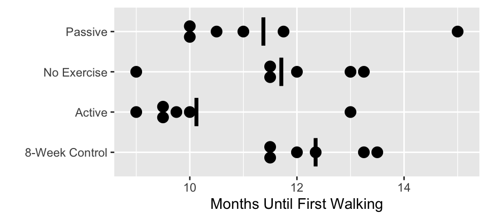

Code
require(rms)
f <- ols(months ~ trt, data=w)
anova(f)Analysis of Variance for months
| d.f. | Partial SS | MS | F | P | |
|---|---|---|---|---|---|
| trt | 3 | 15.74031 | 5.246771 | 2.40 | 0.0979 |
| REGRESSION | 3 | 15.74031 | 5.246771 | 2.40 | 0.0979 |
| ERROR | 20 | 43.68958 | 2.184479 |
Outcome: Age at which child first walks (months)
Experiment involved the reinforcement of the walking and placing reflexes in newborns
Newborn children randomly assigned to one of four treatment groups
| Active Group | Passive Group | No Exercise | 8-week Control | |
|---|---|---|---|---|
| 9.00 | 11.00 | 11.50 | 13.25 | |
| 9.50 | 10.00 | 12.00 | 11.50 | |
| 9.75 | 10.00 | 9.00 | 12.00 | |
| 10.00 | 11.75 | 11.50 | 13.50 | |
| 13.00 | 10.50 | 13.25 | 11.50 | |
| 9.50 | 15.00 | 13.00 | 12.35 | |
| Mean | 10.125 | 11.375 | 11.708 | 12.350 |
| Variance | 2.0938 | 3.5938 | 2.3104 | 0.7400 |
| Sum of \(Y_{i}\) | 60.75 | 68.25 | 70.25 | 74.10 |
w <- rbind(
data.frame(trt='Active', months=c(9,9.5,9.75,10,13,9.5)),
data.frame(trt='Passive', months=c(11,10,10,11.75,10.5,15)),
data.frame(trt='No Exercise', months=c(11.5,12,9,11.5,13.25,13)),
data.frame(trt='8-Week Control', months=c(13.25,11.5,12,13.5,11.5,12.35)) )
aggregate(months ~ trt, w, function(x) c(Mean=mean(x), Variance=var(x))) trt months.Mean months.Variance
1 8-Week Control 12.350000 0.740000
2 Active 10.125000 2.093750
3 No Exercise 11.708333 2.310417
4 Passive 11.375000 3.593750require(ggplot2)
require(data.table)
w <- data.table(w)
stats <- w[, j=list(months = mean(months), var=var(months)), by = trt]
ggplot(w, aes(x=trt, y=months)) +
geom_dotplot(binaxis='y', stackdir='center', position='dodge') +
geom_errorbar(aes(ymin=..y.., ymax=..y..), width=.7, size=1.3,
data=stats) +
xlab('') + ylab('Months Until First Walking') + coord_flip()
Assume that age at first walk is Normally distributed with some variance \(\sigma^2\)
The variance, \(\sigma^2\), is unknown. There are two ways of estimating \(\sigma^2\)
Let the means in the four groups be \(\mu_1\), \(\mu_2\), \(\mu_3\), and \(\mu_4\)
Method 1
Method 2
\(s^2_p\) is an estimate of the within group variability
\(s^2_{\overline{y}}\) is an estimate of the among (or between) group variability
If \(H_0\) is not true, method 2 will overestimate the variance
The hypothesis test is based on \(F = 6 s^2_{\overline{y}} / s^2_p\) and rejects \(H_0\) if \(F\) is too large
The \(F\) statistic has both a numerator and denominator degrees of freedom
For the numerator, d.f. = \(k - 1\)
For the denominator, d.f. = \(N - k\)
In the age at first walking example, there are \(3\) (numerator) and \(20\) (denominator) degrees of freedom
numerator d.f.: how many unique differences being tested (like \(\chi^{2}_{k}\))
denominator d.f.
The cumulative probability of getting an \(F\) statistic \(\leq 58\) with the above d.f. is 1.0000. We want Prob\((F\geq 58)\), so we get \(P=1-1=0\) to several digits of accuracy but report \(P<0.0001\).
where \(n\) is the grand total sample size and there are respectively \(n_{i}\) and \(n_{j}\) observations in samples \(i\) and \(j\)
A few extreme values in age a first walk may violate parametric \(F\)-test assumptions
Run rank ANOVA: Kruskal-Wallis test three different ways:
R function dedicated to Kruskal-WallisAnalysis of Variance for rank(months)
| d.f. | Partial SS | MS | F | P | |
|---|---|---|---|---|---|
| trt | 3 | 359.3333 | 119.77778 | 3.07 | 0.0515 |
| REGRESSION | 3 | 359.3333 | 119.77778 | 3.07 | 0.0515 |
| ERROR | 20 | 781.1667 | 39.05833 |
Spearman rho^2 Response variable:months
rho2 F df1 df2 P Adjusted rho2 n
trt 0.315 3.07 3 20 0.0515 0.212 24
Kruskal-Wallis rank sum test
data: months by trt
Kruskal-Wallis chi-squared = 7.2465, df = 3, p-value = 0.06444Note that the classical Kruskal-Wallis test uses the \(\chi^{2}\) approximation while the other two used an \(F\) distribution, which is as or more accurate than using \(\chi^{2}\).
1 Make sure that \(m\) is the total number of hypotheses tested with the data, whether formally or informally.
```{r setup, include=FALSE}
require(Hmisc)
require(qreport)
hookaddcap() # make knitr call a function at the end of each chunk
# to try to automatically add to list of figure
options(prType='html')
getRs('qbookfun.r')
knitr::set_alias(w = 'fig.width', h = 'fig.height',
cap = 'fig.cap', scap ='fig.scap')
```
# Multiple Groups
## Examples
* Compare baseline characteristics (e.g. age, height, BMI) or study response variable among subjects enrolled in one of three (or more) nonrandomized clinical trial arms
* Determine if pulmonary function, as measured by the forced expiratory volume in one second, differs in non-smokers, passive smokers, light smokers, and heavy smokers
* Evaluate differences in artery dilation among wild type, knockout, and knockout+treated mice
+ Could add second factor: Normoxic (normal oxygen) or hypoxic (insufficient oxygen) environmental conditions (a _two-way_ ANOVA)
* In general, studies with a continuous outcome and categorical predictors
## The $k$-Sample Problem
`r mrg(ems("9"))`
* When $k=2$ we compare two means or medians, etc.
* When $k>2$ we could do all possible pairwise 2-sample tests but this can be misleading and may $\uparrow$ type I assertion probability
* Advantageous to get a single statistic testing $H_{0}$: all groups have the same distribution (or at least the same central tendency)
## Parametric ANOVA
### Model
* Notation
+ $k$ groups (samples) each from a normal distribution
+ Population means $\mu_{1}, \mu_{2}, \ldots, \mu_{k}$
+ $n_i$ observations from the $i$th group
+ $y_{ij}$ is the $j$th observation from $i$th group
* Model specification
+ $y_{ij} = \mu + \alpha_i + e_{ij}$
+ $\mu$ is a constant
+ $\alpha_i$ is a constant specific to group $i$
+ $e_{ij}$ is the error term, which is assumed to follow a Normal distribution with mean 0 and variance $\sigma^2$
+ This model is overparameterized; that is, it is not possible to estimate $\mu$ and each $\alpha_i$ (a total of $k + 1$) terms using only $k$ means
* Restriction 1: $\Sigma \alpha_i = 0$
+ $\mu$ is the mean of all groups taken together, the grand or overall mean
+ each $\alpha_i$ represents the deviation of the mean of the $i$th group from the overall mean
+ $\epsilon_{ij}$ is the deviation of individual data points from $\mu + \alpha_i$
* Restriction 2: $\alpha_1 = 0$
+ $\mu$ is the mean of group 1
+ each $\alpha_i$ represents the deviation of the mean of the $i$th group from the group 1 mean
+ $\epsilon_{ij}$ is the deviation of individual data points from $\mu + \alpha_i$
* Other restrictions possible, and will vary by software package
### Hypothesis test
* Hypothesis test
+ $H_{0}: \mu_{1}=\mu_{2}=\ldots=\mu_{k}$
+ $H_{1}:$ at least two of the population means differ
* Not placing more importance on any particular pair or
combination although large samples get more weight in the analysis
* Assume that each of the $k$ populations has the same $\sigma$
* If $k=2$ ANOVA yields identical $P$-value as 2-tailed 2-sample $t$-test
* ANOVA uses an $F$ statistic and is always 2-tailed
* $F$ ratio is proportional to the sum of squared differences between each sample mean and the grand mean over samples, divided by the sum of squared differences between all raw values and the mean of the sample from which the raw value came
* This is the SSB/SSW (sum of squares between / sum of squares within)
* SSB is identical to regression sum of squares <br> SSW is identical to sum of squared errors in regression
* $F=MSB/MSW$ where
+ MSB = mean square between = SSB/$(k-1), k-1=$ "between group d.f."
+ MSW = mean square within = SSW/$(n-k), n-k=$ "within group d.f."
+ Evidence for different $\mu$s $\uparrow$ when differences in sample means (ignoring direction) are large in comparison to between-patient variation
### Motivating Example
* Example from _Biostatistics: A methodology for the Health Sciences_ by Fisher and Van Belle
* Research question (Zelazo et al., 1972,_Science_)
+ Outcome: Age at which child first walks (months)
+ Experiment involved the reinforcement of the walking and placing reflexes in newborns
+ Newborn children randomly assigned to one of four treatment groups
- Active exercise: Walking and placing stimulation 4 times a day for 8 weeks
- Passive exercise: An equal amount of gross motor stimulation
- No exercise: Tested along with first two groups at weekly intervals
- Control group: Infants only observed at 8 weeks (control for effect of repeated examinations)
* Distribution of ages (months) at which infants first walked alone. Data from Zelazo _et al._, 1972
| | Active Group | Passive Group | No Exercise | 8-week Control |
|:-----|-----:|-----:|-----:|-----:|
| | 9.00 | 11.00 | 11.50 | 13.25 |
| | 9.50 | 10.00 | 12.00 | 11.50 |
| | 9.75 | 10.00 | 9.00 | 12.00 |
| | 10.00| 11.75 | 11.50 | 13.50 |
| | 13.00| 10.50 | 13.25 | 11.50 |
| | 9.50 | 15.00 | 13.00 | 12.35 |
| | | | | |
| Mean | 10.125 | 11.375 | 11.708 | 12.350 |
| Variance | 2.0938 | 3.5938 | 2.3104 | 0.7400 |
| Sum of $Y_{i}$ | 60.75 | 68.25 | 70.25 | 74.10 |
```{r walking,h=2.25,w=5,cap='Age in months when infants first began walking by treatment group with mean lines',scap='Age of first walking'}
#| label: fig-multgroup-walking
w <- rbind(
data.frame(trt='Active', months=c(9,9.5,9.75,10,13,9.5)),
data.frame(trt='Passive', months=c(11,10,10,11.75,10.5,15)),
data.frame(trt='No Exercise', months=c(11.5,12,9,11.5,13.25,13)),
data.frame(trt='8-Week Control', months=c(13.25,11.5,12,13.5,11.5,12.35)) )
aggregate(months ~ trt, w, function(x) c(Mean=mean(x), Variance=var(x)))
require(ggplot2)
require(data.table)
w <- data.table(w)
stats <- w[, j=list(months = mean(months), var=var(months)), by = trt]
ggplot(w, aes(x=trt, y=months)) +
geom_dotplot(binaxis='y', stackdir='center', position='dodge') +
geom_errorbar(aes(ymin=..y.., ymax=..y..), width=.7, size=1.3,
data=stats) +
xlab('') + ylab('Months Until First Walking') + coord_flip()
```
* Note that there are equal samples size in each group ($n_i = 6$ for each $i$) in the example. In general, this is not necessary for ANOVA, but it simplifies the calculations.
* Thought process for ANOVA
+ Assume that age at first walk is Normally distributed with some variance $\sigma^2$
+ The variance, $\sigma^2$, is unknown. There are two ways of estimating $\sigma^2$
+ Let the means in the four groups be $\mu_1$, $\mu_2$, $\mu_3$, and $\mu_4$
+ Method 1
- Assuming the variance are equal, calculated a pooled (or average) estimate of the variance using the four groups
- $s^2_p = \frac{1}{4}(2.0938 + 3.5938 + 2.3104 + 0.7400) =
2.184$
+ Method 2
- Assuming the four treatments do not differ ($H_0: \mu_1 = \mu_2 = \mu_3 = \mu_4 = \mu$), the sample means follow a Normal distribution with variance $\sigma^2/6$.
- We can then estimated $\sigma^2/6$ by the variance of the sample means ($s^2_{\overline{y}}$)
- $s^2_{\overline{y}} = \textrm{variance of } {10.125, 11.375, 11.708, 12.350}$
- $s^2_{\overline{y}} = 0.87349$, so $6 s^2_{\overline{y}} = 5.247$ is our second estimate of $\sigma^2$
+ $s^2_p$ is an estimate of the _within_ group variability
+ $s^2_{\overline{y}}$ is an estimate of the _among_ (or _between_) group variability
+ If $H_0$ is not true, method 2 will _overestimate_ the variance
+ The hypothesis test is based on $F = 6 s^2_{\overline{y}} / s^2_p$ and rejects $H_0$ if $F$ is too large
* Degrees of Freedom
+ The $F$ statistic has both a numerator and denominator degrees of freedom
+ For the numerator, d.f. = $k - 1$
- There are $k$ parameters ($\alpha_1, \alpha_2, \ldots, \alpha_k)$
- And _one_ restriction ($\Sigma \alpha_k = 0$, or $\alpha_1 = 0$, or another)
+ For the denominator, d.f. = $N - k$
- There are $N$ total observations
- And we estimate $k$ sample means
+ In the age at first walking example, there are $3$ (numerator) and $20$ (denominator) degrees of freedom
```{r walk-anova}
require(rms)
f <- ols(months ~ trt, data=w)
anova(f)
```
### Connection to Linear Regression
* Can do ANOVA using multiple regression, using an intercept and $k-1$ "dummy" variables indicating group membership, so memorizing formulas specific to ANOVA is not needed
* Why is between group d.f.=$k-1$?
+ can pick any one group as reference group, e.g., group 1
+ $H_0$ is identical to $H_{0}:\mu_{2}-\mu_{1}=\mu_{3}-\mu_{1}=\ldots=\mu_{k}-\mu_{1}=0$
+ if $k-1$ differences in means are all zero, all means must be equal
+ since any unique $k-1$ differences define our goal, there is $k-1$ d.f. between groups for $H_0$
## Why All These Distributions?
* Normal distribution is handy for approximating the distribution of $z$ ratios (mean minus hypothesized value / standard error of mean) when $n$ is large or $\sigma$ is known
* If $z$ is normal, $z^2$ has a $\chi^{2}_{1}$ distribution
* If add $k$ $z^{2}$ values the result has a $\chi^{2}_{k}$ distribution; useful
+ in larger than $2\times 2$ contingency tables
+ in testing goodness of fit of a histogram against a theoretical distribution
+ when testing more than one regression coefficient in regression models not having a $\sigma$ to estimate
* $t$ distribution: when $\sigma$ is estimated from the data; exact $P$-values if data from normal population <br> Distribution indexed by d.f.: $t_{df}$; useful for
+ testing one mean against a constant
+ comparing 2 means
+ testing one regression coefficient in multiple linear regression
* $t_{df}^{2}$ has an $F$ distribution
* $F$ statistic can test
+ $>1$ regression coefficient
+ $>2$ groups
+ whether ratio of 2 variances=1.0 (this includes MSB/MSW)
* To do this $F$ needs two different d.f.
+ numerator d.f.: how many unique differences being tested (like $\chi^{2}_{k}$)
+ denominator d.f.
- total sample size minus the number of means or regression coefficients and intercepts estimated from the data
- is the denominator of the estimate of $\sigma^2$
- also called the error or residual d.f.
* $t_{df}^{2} = F_{1,df}$
* ANOVA results in $F_{k-1,df}$; d.f.=$N-k$ where $N=$ combined total sample size; cf. 2-sample $t$-test: d.f.=$n_{1}+n_{2} - 2$
* Example:
$$F = MSB/MSW = 58 \sim F_{4,1044}$$
The cumulative probability of getting an $F$ statistic $\leq 58$ with
the above d.f. is 1.0000. We want Prob$(F\geq 58)$, so we get
$P=1-1=0$ to several digits of accuracy but report $P<0.0001$.
```{r fex}
pf(58, 4, 1044)
1 - pf(58, 4, 1044)
```
## Software and Data Layout
* Every general-purpose statistical package does ANOVA
* Small datasets are often entered using Excel
* Statistical packages expect a grouping variable, e.g., a column of treatment names or numbers; a column of response values for all treatments combines is also present
* If you enter different groups' responses in different spreadsheets or different columns within a spreadsheet, it is harder to analyze the data with a stat package
## Comparing Specific Groups
`r mrg(ems("12.4"))`
* $F$ test is for finding any differences but it does not reveal which groups are different
* Often it suffices to quote $F$ and $P$, then to provide sample means (and their confidence intervals)
* Can obtain CLs for any specific difference using previously discussed 2-sample $t$-test, but this can result in inconsistent results due solely to sampling variability in estimating the standard error of the difference in means using only the two groups to estimate the common $\sigma$
* If assume that there is a common $\sigma$, estimate it using all the data <br> to get a pooled $s^2$
* $1-\alpha$ CL for $\mu_{i}-\mu_{j}$ is then
$$\bar{y}_{i}-\bar{y}_{j} \pm t_{n-k,1-\alpha/2} \times s
\sqrt{\frac{1}{n_{i}}+\frac{1}{n_{j}}}, $$
where $n$ is the grand total sample size and there are respectively
$n_{i}$ and $n_{j}$ observations in samples $i$ and $j$
* Can test a specific $H_{0}: \mu_{i}=\mu_{j}$ using similar calculations; Note that the d.f. for $t$ comes from the grand sample size $n$, which $\uparrow$ power and $\downarrow$ width of CLs slightly
* Many people use more stringent $\alpha$ for individual tests when testing more than one of them (@sec-multcomp)
+ This is not as necessary when the overall $F$-test is significant
## Non-Parametric ANOVA: Kruskal-Wallis Test
* $k$-sample extension to the 2-sample Wilcoxon--Mann--Whitney rank-sum test
* Is very efficient when compared to parametric ANOVA even if data are from normal distributions
* Has same benefits as Wilcoxon (not harmed by outliers, etc.)
* Almost testing for equality of population medians
* In general, tests whether observations in one group tend to be larger than observations in another group (when consider randomly chosen pairs of subjects)
* Test statistic obtained by replacing all responses by their ranks across all subjects (ignoring group) and then doing an ANOVA on the ranks
* Compute $F$ (many authors use a $\chi^2$ approximation but $F$ gives more accurate $P$-values)
* Look up against the $F$ distribution with $k-1$ and $n-k$ d.f.
* Very accurate $P$-values except with very small samples
* Example: <br> $F$ statistic from ranks in Table 12.16: $F_{3,20}=7.0289$
* Using the cumulative distribution calculator from the web page, the prob. of getting an $F$ less impressive than this under $H_0$ is 0.9979 <br> $P$ is $1-0.9979=0.0021$
* Compare with Rosner's $\chi^{2}_{3}=11.804$ from which $P=0.008$
by <tt>survstat</tt> or one minus the CDF
* Evidence that not all of the 4 samples are from the same distribution
+ loosely speaking, evidence for differences in medians
+ better: some rabbits have larger anti-inflammatory effects when placed on different treatments in general
* Comparison of Kruskal-Wallis and Parametric ANOVA for age at first walk example
+ A few extreme values in age a first walk may violate parametric $F$-test assumptions
+ Run rank ANOVA: Kruskal-Wallis test three different ways:
- Parametric ANOVA on the ranks of $y$
- Spearman's $\rho^2$ generalized to multiple columns of $x$
- An `R` function dedicated to Kruskal-Wallis
```{r kw}
anova(ols(rank(months) ~ trt, data=w))
```
```{r kw2}
spearman2(months ~ trt, data=w)
kruskal.test(months ~ trt, data=w)
```
Note that the classical Kruskal-Wallis test uses the $\chi^{2}$
approximation while the other two used an $F$ distribution, which is as or more accurate than using $\chi^{2}$.
## Two-Way ANOVA
`r mrg(ems("9.3"))`
* Ideal for a factorial design or observational study with 2 categorical grouping variables
* Example: 3 treatments are given to subjects and the researcher thinks that females and males will have different responses in general <br> Six means: $\bar{Y}_{i,j}, i=$ treatment, $j=$ sex group
* Can test
+ whether there are treatment differences after accounting for sex effects
+ whether there are sex differences after accounting for treatment effects
+ whether the treatment effect is difference for females and males, if allow treatment $\times$ sex interaction to be in the model
* Suppose there are 2 treatments ($A,B$) and the 4 means are $\bar{Y}_{Af}, \bar{Y}_{Bf}, \bar{Y}_{Am}, \bar{Y}_{Bm}$, where $f, m$ index the sex groups
* The various effects are estimated by
+ treatment effect: $\frac{(\bar{Y}_{Af}-\bar{Y}_{Bf})+(\bar{Y}_{Am}-\bar{Y}_{Bm})}{2}$
+ sex effect: $\frac{(\bar{Y}_{Af}-\bar{Y}_{Am})+(\bar{Y}_{Bf}-\bar{Y}_{Bm})}{2}$
+ treatment $\times$ sex interaction: $(\bar{Y}_{Af}-\bar{Y}_{Bf})-(\bar{Y}_{Am}-\bar{Y}_{Bm}) = (\bar{Y}_{Af}-\bar{Y}_{Am})-(\bar{Y}_{Bf}-\bar{Y}_{Bm})$
* Interactions are "double differences"
* Assessing whether treatment effect is same for $m$ vs. $f$ is the same as assessing whether the sex effect is the same for $A$ vs. $B$
* **Note**: 2-way ANOVA is **not** appropriate when one of the categorical variables represents conditions applied to the same subjects, e.g. serially collected data within patient with time being one of the variables; <br> 2-way ANOVA assumes that all observations come from different subjects
## Analysis of Covariance
`r mrg(ems("12.5.3"))`
* Generalizes two-way ANOVA
* Allows adjustment for continuous variables when comparing groups
* Can $\uparrow$ power and precision by reducing unexplained patient to patient variability ($\sigma^2$)
* When $Y$ is also measured at baseline, adjusting for the baseline version of $Y$ can result in a major reduction in variance
* Fewer assumptions if adjust for baseline version of $Y$ using ANCOVA instead of analyzing ($Y -$ baseline $Y$)
* Two-way ANOVA is a special case of ANCOVA where a categorical variable is the only adjustment variable (it is represented in the model by dummy variables)
See Chapter @sec-ancova for much more information about ANCOVA
in RCTs. <!-- ???? TODO -->
## Multiple Comparisons {#sec-multcomp}
`r mrg(ems("12.4.3"))`
* When hypotheses are prespecified and are few in number, don't need to correct $P$-values or $\alpha$ level in CLs for multiple comparisons
* Multiple comparison adjustments are needed with $H_{0}$ is effectively in the form
+ Is one of the 5 treatments effective when compared against control?
+ Of the 4 etiologies of disease in our patients, is the treatment effective in at least one of them?
+ Is the treatment effective in either diabetics, older patients, males, \ldots, etc.?
+ Diabetics had the greatest treatment effect empirically; the usual $P$-value for testing for treatment differences in diabetics was 0.03
* Recall that the probability that at least one event out of events $E_{1}, E_{2}, \ldots, E_{m}$ occurs is the sum of the probabilities if the events are mutually exclusive
* In general, the probability of at least one event is $\leq$ the sum of the probabilities of the individual events occurring
* Let the event be "reject $H_0$ when it is true", i.e., making a type I assertion probability or "false positive" conclusion
* If test 5 hypotheses (e.g., 5 subgroup treatment effects) at the 0.05 level, the upper limit on the chance of finding one significant difference if there are no differences at all is $5 \times 0.05 = 0.25$
* This is called the _Bonferroni inequality_
* If we test each $H_0$ at the $\frac{\alpha}{5}$ level the chance of at least one false positive is no greater than $\alpha$
* The chance of at least one false positive is the _experimentwise assertion probability_ whereas the chance that a specific test is positive when there is no real effect is the _comparisonwise error probability_ better called _comparisonwise type I assertion probability_
* Instead of doing each test at the $\frac{\alpha}{m}$ level we can get a conservative adjusted $P$-value by multiplying an individual $P$-value by $m$^[Make sure that $m$ is the total number of hypotheses tested with the data, whether formally or informally.]
* Whenever $m \times P > 1.0$ report $P=1.0$
* There are many specialized and slightly less conservative multiple comparison adjustment procedures. Some more complex procedures are actually more conservative than Bonferroni.
* Statisticians generally have a poor understanding about the need to not only adjust $P$-values but to adjust point estimates also, when many estimates are made and only the impressive ones (by $P$) are discussed. In that case point estimates are badly biased away from the null value. For example, the BARI study analyzed around 20 subgroups and only found a difference in survival between PTCA and CABG in diabetics. The hazard ratio for CABG:PTCA estimated from this group is far too extreme.
* Bayesian have a much different view of multiplicities, and the Bayesian approach is more in line with accepted rules of evidence, e.g., evidence about A doesn't need to be discounted because B was assessed
```{r echo=FALSE}
saveCap('11')
```